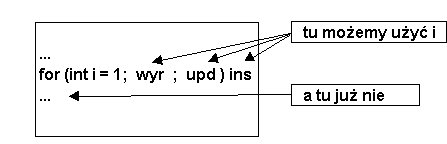

3. Pêtle iteracyjne o danej liczbie powtórzeñ: instrukcja for
Instrukcja for ma nastêpuj±c± postaæ. for (init; wyr; upd) ins gdzie:
Instrukcja for tworzy pêtlê, która dzia³a w nastêpuj±cy sposób:
Porównuj±c instrukcjê for z instrukcj± while mo¿na wskazaæ, ¿e taki sam efekt jak za pomoc± instrukcji:
init;
while (wyr) {
ins;
upd;
}
Dobry styl programowania nakazuje u¿ywaæ instrukcji for wy³±cznie w tym
celu.
Najprostsze zastosowanie ma instrukcja for przy organizacji pêtli iteracyjnych ze znanym zakresem iteracji. W tym przypadku czê¶c init inicjuje licznik, wyra¿enie wyr kontroluje granice licznika, czê¶æ upd zmienia bie¿±c± warto¶æ licznika.
Krótkie przyk³ady Zasiêg zmiennych deklarowanych w czê¶ci inicjacyjnej instrukcji for zaczyna siê od miejsca deklaracji i koñczy wraz z koñcem instrukcji for
Obrazuje to poni¿szy rysunek:

Na przyk³ad: Terminem redeklaracja okre¶lamy ponown± deklaracjê zmiennej lokalnej
w jej zasiêgu, tzn. w bloku. Przypomnijmy: ka¿da zmienne lokalna mo¿e byæ
deklarowana tylko raz w bloku i nie jest dopuszczalne przes³anianie nazw
zmiennych lokalnych w blokach wewnêtrznych. Nazwy zmiennych, opisuj±cych
pola klasy mog± byæ w blokach metod przes³aniane.
Oczywi¶cie, wcale nie musimy deklarowaæ zmiennych w czê¶ci inicjacyjnej instrukcji for, ale - pamiêtajmy, ¿e zgodnie z ogóln± zasad± - ka¿da zmienna musi byæ przed u¿yciem zadeklarowana: int a =0, n = 10, i; for (i=0; i < n; i ++) a+=i; // Ok for (i=n; i < n*2; i++) a+=i; // Ok
Ale nie wolno pisaæ tak: Przed lektur± dalszego tekstu, proszê samodzielnie wykonaæ to zadanie, definiuj±c odpowiedni± metodê w klasie Liczba, któr± mieli¶my opracowaæ w poprzednim podpunkcie.
Mo¿liwe rozwi±zanie - metoda pow w klasie Liczba, która mo¿e byæ u¿yta na rzecz dowolnej liczby ca³kowitej:
public class Liczba {
int a;
public Liczba(int liczba) { // konstruktor
a = liczba;
}
//...
public double pow(int n) {
if (n < 0) { // warunek konieczny: n >=0
System.out.println("Niedopuszczalna warto¶æ wyk³adnika");
return -0.1;
}
double wynik = 1;
for (int i = 1; i <= n; i++) wynik *= a;
return wynik;
}
Zauwa¿my, ¿e w pêtli for zastosowali¶my zmiany licznika od 1 do n (w³±cznie).
Ten sam efekt mogliby¶my osi±gn±æ pisz±c: for (i=0; i<n; i++). Instrukcje w nastêpuj±cych pêtlach for zostan± wykonane n - razy
for (int i = 1; i <= n; i++) .... for (int i = 0; i < n; i++) .... i pod wzglêdem liczby "obrotów" pêtli obie instrukcje for s± równowa¿ne
Drugi praktyczny przyk³ad zastosowania instrukcji for polega na rozwi±zaniu nastêpuj±cego zadania. Przed lektur± dalszego tekstu proszê spróbowaæ samodzielnie rozwi±zaæ to zadanie.
Mo¿liwe rozwi±zanie:
public double getBalanceAfter(int n) {
double wspOds = (interest/100)/12;
for (int i = 1; i <= n; i++)
balance += wspOds*balance + monthIncome - monthExpend;
return balance;
}
Ogólnie, instrukcja for jest bardzo elastyczna. Spe³niaj±c regu³y sk³adniowe mo¿emy pisaæ dosyæ dziwne programy.
import javax.swing.*;
public class Napisy {
final int LIMIT = 10;
public static void main(String[] args) {
new Napisy();
}
public Napisy() {
String ozdoba = null,
txt = null;
int n = 0;
for (ozdoba = ask("Co wokó³?");
n <= LIMIT && ozdoba != null && (txt = ask("Napis?")) != null;
n++, System.out.println(n + ": " + ozdoba + txt + ozdoba) );
System.exit(1);
}
private String ask(String txt) {
return JOptionPane.showInputDialog(txt);
}
}
Proszê skompilowac i wykonaæ ten program - tak by widzieæ efekty jego dzia³ania. Ogólnie jednak: u¿ywajmy instrukcji for wy³±cznie do konstruowania pêtli
ze znan± liczb± lub zakresem iteracji, czyli w postaci:
for ( i = ?; i <?; i = i ± ?) ... wszystkie inne przypadki programuj±c za pomoca instrukcji while lub do..while
Na koniec warto zwróciæ uwagê na to, ¿e pêtle iteracyjne mog± byæ dowolnie zagnie¿d¿ane.
public class Nested {
public static void main(String[] args) {
String out = null;
char c = 'a';
while (c <= 'd') {
for (int i=1; i<=2; i++) {
out = "Dla " + c + " " + i + " mamy j =";
for (int j = i; j <= i + 3; j++) out += " " + j;
System.out.println(out);
}
c++;
}
}
}
i uzyskaæ wydruk: Dla a 1 mamy j = 1 2 3 4
Dla a 2 mamy j = 2 3 4 5 Dla b 1 mamy j = 1 2 3 4 Dla b 2 mamy j = 2 3 4 5 Dla c 1 mamy j = 1 2 3 4 Dla c 2 mamy j = 2 3 4 5 Dla d 1 mamy j = 1 2 3 4 Dla d 2 mamy j = 2 3 4 5
Proszê przeanalizowaæ wyniki i odpowiedzieæ na pytanie: dlaczego sekwencje
|